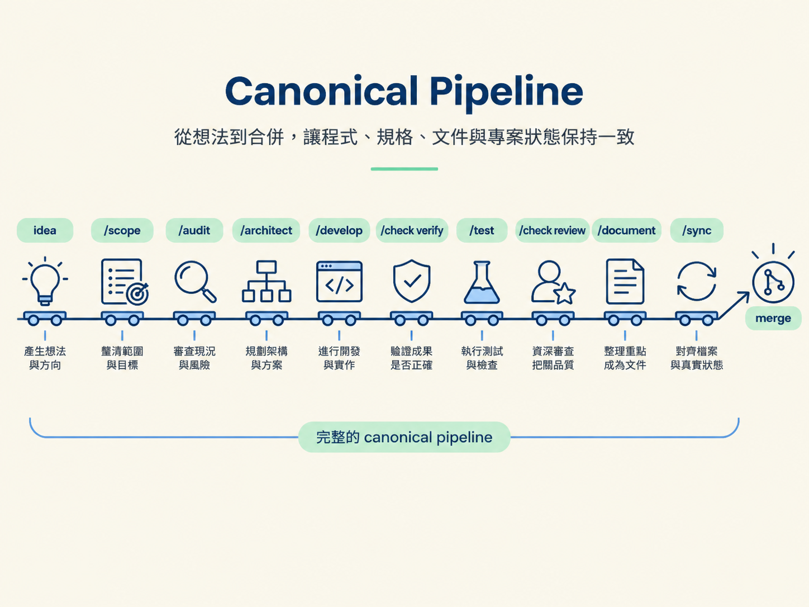
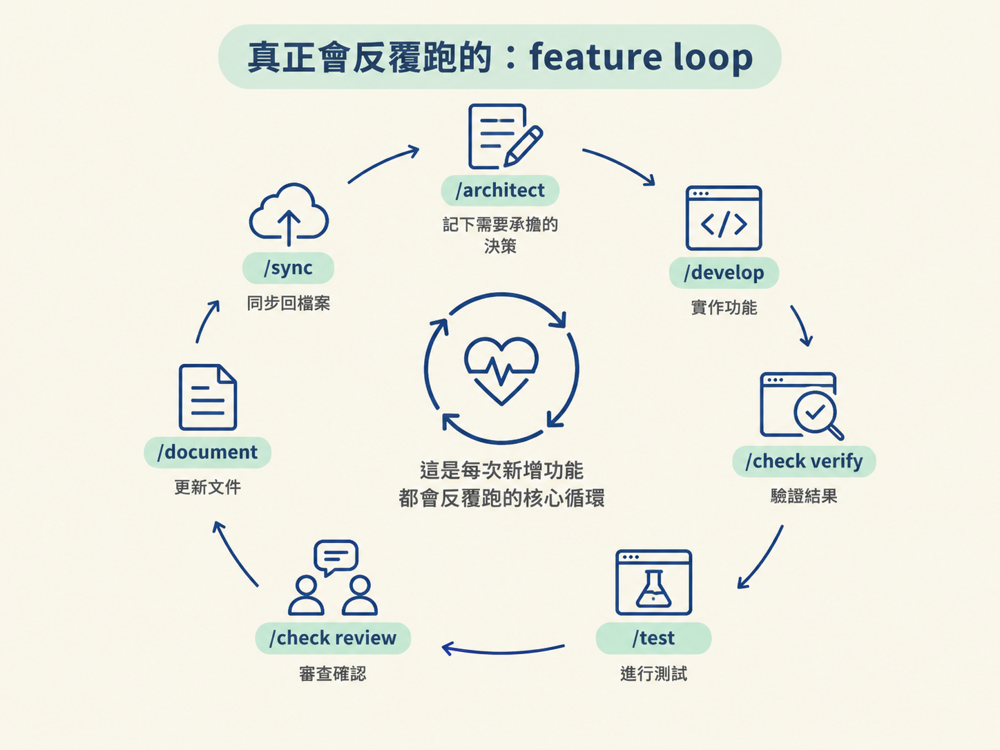
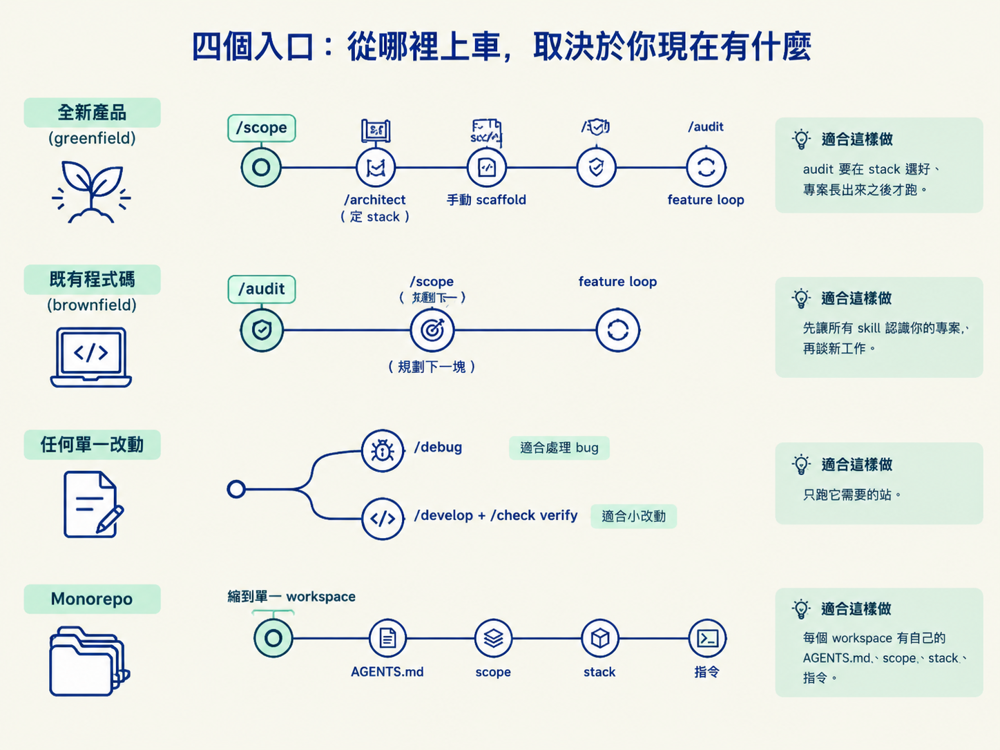

看完這一節，你應該能說出 canonical pipeline 的順序，並依照 greenfield、brownfield、單一改動與 monorepo 四種情境，判斷該從哪一站開始、需要跑哪些段落。
上一節你已經把九個 skill 認領完，也知道 /scope、/architect、/audit 各自負責什麼。真正開始做事時，問題卻會變成另一種：這個專案到底該從哪一站開始？是先把想法 scope 清楚，還是先把既有程式碼 audit 一遍？如果只是修一個小問題，難道也要跑完九站嗎？
會卡住，是因為你把這套流程想成一條只能從起點搭到終點的輸送帶。其實它更像一張鐵路網：有一條完整主線，也有幾個不同的進站口。你現在手上有什麼、專案走到哪裡，會決定你該從哪裡上車。
這一節先把主線畫出來，再看四種常見情境各自適合的入口。順序不用背，要緊的是搞懂每一站為什麼排在那裡：後面的 skill，必須能讀到前面留下的決策與檔案。
整套流程最完整的主線如下。它描述的是從一個還沒成形的想法，一路走到 merge 的預設路徑：
idea → /scope → /audit → /architect → /develop → /check verify → /test
→ /check review → /document → /sync可以把這條線理解成一個逐層收斂的過程。
先用 /scope 把「想做什麼」說清楚，再用 /audit 讓每個 skill 認識真實的專案。接著透過 /architect 做出真正需要承擔的設計決策，交給 /develop 實作。完成後，先用真的跑起來的 app 透過 /check verify 證明行為可用，再用 /test 把這些行為鎖住。
接下來，/check review 會換一個模型，以資深審查的角度檢查成果；/document 把重要內容寫成給人看的文字；最後由 /sync 把所有 durable 檔案對回真實狀態。這樣一來，程式、spec、文件與專案狀態才不會各走各的。

另外有兩個不受主線位置限制的動作。東西壞掉、拋錯或行為不對時，隨時可以使用 /debug。而不帶參數的 /scope 也可以隨時執行，用來查看專案目前走到哪裡、狀態是什麼。
主線前面的 /scope、/audit，以及 greenfield 專案第一次使用的 /architect，比較像是地基設定。地基建立後，每次新增功能，真正會不斷重複的是這段：
/architect → /develop → /check verify → /test → /check review → /document → /sync這就是 feature loop，也是整套流程的心跳。每次要長出一個新功能，先在 /architect 裡記下需要承擔的決策，再交給 /develop 實作，經過驗證、測試與審查，最後在 /sync 收尾。

如果只記得一件事，可以記住這個 loop 的兩個端點：決策先寫成 spec，收尾時把知識同步回檔案。這兩層把「當下做了什麼」變成之後仍然找得到的專案狀態。
主線描述的是完整路徑，但不是每個專案都從 idea 開始，也不是每個改動都需要走完全部站點。下面先用表格看全貌，再拆開說明每種情境。
| 情境 | 從哪裡開始 | 備註 |
|---|---|---|
| 全新產品（greenfield） | /scope → /architect（定 stack）→ 手動 scaffold → /audit → feature loop | audit 要在 stack 選好、專案長出來之後才跑 |
| 既有程式碼（brownfield） | /audit 先跑 → /scope 規劃下一塊 → feature loop | 先讓所有 skill 認識你的專案，再談新工作 |
| 任何單一改動 | 只跑它需要的站 | bug 直接 /debug；小改動 /develop＋/check verify |
| Monorepo | 一切 scope 到目標 workspace | 每個 workspace 有自己的 AGENTS.md、scope、stack、指令 |

全新專案的順序，和主線表面上看起來不太一樣。主線寫的是 /scope → /audit → /architect，但實際建立 greenfield 專案時，順序是：
/scope 先把想法整理成計畫，接著由 /architect 決定技術棧。然後你用這個 stack 的工具，手動把空專案 scaffold 出來，最後才執行 /audit。
原因在於，audit 的工作是讀取真實專案，並寫出 AGENTS.md。如果專案還不存在、stack 也尚未決定，它只能對著空資料夾猜測，產出的 context 檔自然沒有可靠依據。
所以，greenfield 要顧的其實是依賴關係，不必硬套主線順序：audit 必須等 stack 與 scaffold 都就緒，才有東西可以讀、可以整理，也才有意義。
如果專案已經有既存程式碼，入口就反過來，先跑 /audit。它會讀取真實的程式碼，寫出 AGENTS.md，讓後續每個 skill 在動手前，就知道專案使用的 stack、可用指令與既有慣例。
接著，/scope 會把現有程式碼納入考量，再規劃要新增的那一塊。從這裡開始，流程就進入和 greenfield 相同的 feature loop。
這一站像是先帶新成員參觀工作現場。沒有 audit，後面的 skill 可能知道自己要完成什麼，卻不知道應該用什麼方式融入這個專案。
這套流程刻意不要求每個改動都走完整主線。/scope、/architect 等前置站點，是在需要時使用，不是每次都必須打卡。
例如，一個已經明確的 bug 不需要重新 scope，可以直接使用 /debug。一個足夠小的改動，也可以只跑 /develop，接著用 /check verify 確認結果。
但有一條底線不能省：只要改動牽涉到一個尚未寫下來、而且會影響後續實作的承重決策，就必須進入 /architect。這是因為決策如果只留在對話或某個人的記憶裡，之後的實作、審查與同步都沒有穩定的依據。
monorepo 是在同一個 repo 裡放了多個專案或 workspace。這套流程的處理方式很直接：把 scope 縮到目前要修改的目標 workspace。
每個 workspace 有自己的 scope、spec、巢狀 AGENTS.md 與指令。每個 skill 也都在目標 workspace 的範圍內工作，不會順手伸到其他 workspace。
這時，第 1 節提到的「巢狀 context 檔」就派上用場了。skill 讀取最靠近目標檔案的那一份設定時，可以同時取得 repo 層級與 workspace 層級的規則。範圍縮小了，規則卻仍然能一層一層接上。
主線是idea → /scope → /audit → /architect → /develop → /check verify → /test → /check review → /document → /sync，而真正反覆跑的是從/architect到/sync的 feature loop。/debug與無參數的/scope隨時可用。入口依情境而異：greenfield 是 scope、architect 定 stack、scaffold、再 audit；brownfield 先 audit；單一改動只跑需要的站；monorepo 縮到單一 workspace。順序不用死記，其實就是「後面要靠前面留下的檔案」這個因果。
現在你應該能回答兩個問題：這個專案要從哪裡進站，以及接下來需要跑哪幾段。主線裡還藏著一個會影響後續檢查深度的選擇：/scope 結束前，會請你替專案挑一個 workflow depth，決定 /develop 之後要跑多少道檢查。下一節就把這四個 depth 攤開，讓你做出這個選擇。